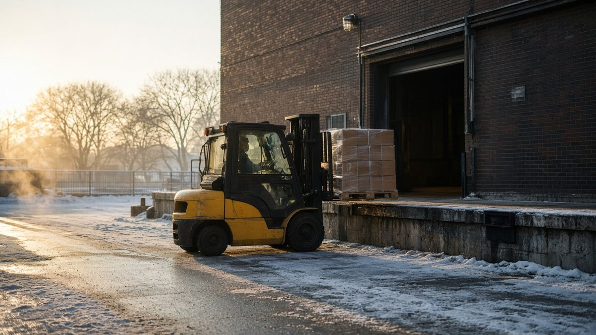

Mortar Smash › Trade guides › Brickwork below the DPC
By the Mortar Smash trade desk · Published 19 November 2026
Short answer
Below the damp proof course, lay bricks rated F2,S2 (frost resistant, low soluble salts) or engineering bricks, never F0 or F1 units, and use the mortar class on the drawings: at least M6 for F2,S2 facing bricks in most cases, and M12 for engineering brick courses on severely exposed work. Add sulfate resisting cement where the ground calls for it. Those are the positions taken by the Brick Development Association, the Premier Guarantee warranty body and the brick maker Michelmersh. The drawings, the specification, the brick maker's data and local building regulations decide the job; this page explains the published guidance and is not a design.

1. Why the bottom courses are the hard ones
A DPC stops ground moisture climbing into the wall above it. It does nothing for the bricks underneath. Michelmersh's guide on facing bricks below the DPC puts it plainly: bricks that sit below the DPC are exposed to potential saturation from water migrating up from the ground. Wet brick that then freezes is how frost attack starts. Premier Guarantee describes frost attack as the repeated freezing and thawing of water in the masonry, which can stress the units and lead to spalling.
The worst zone is close to ground level. Michelmersh says severe exposure covers roughly two courses above and two below ground; bricks deeper down stay just as wet but are less likely to freeze. That is also the splash zone, where rain bounces off paving onto the wall.
2. Which bricks: read the F and S ratings
Clay bricks sold under EN 771-1 carry a freeze/thaw category (F0, F1, F2) and an active soluble salts category (S1, S2). Premier Guarantee's table sets out where each frost category belongs:
| Rating | What it means | Use below the DPC? |
|---|---|---|
| F2 | Severe exposure to freeze/thaw | Yes. Premier Guarantee says F2 units should be used below the DPC, in plinths, chimneys, cappings, copings and sills |
| F1 | Moderate exposure | No. Generally between the DPC and the eaves, and not in severe or very severe driving rain areas |
| F0 | Passive exposure, not freeze/thaw resistant | No. Not for external use unless fully covered by impermeable cladding |
| S2 | Low active soluble salts | Preferred. Premier Guarantee says low salt units should be specified where brickwork may be persistently wet |
Michelmersh asks for both together, F2 and S2, below the DPC. The Brick Development Association uses the same pairing for freestanding walls: all clay bricks from the footings up should be F2,S2 or engineering class A or B. Premier Guarantee adds that most concrete masonry units of 22 N/mm² are durable in most situations and treated as equivalent to F2 clay units, and that the specification should follow PD 6697.
Two practical points from Michelmersh are worth passing to the client before the wall goes up. Handmade and soft mud bricks have an open texture that absorbs and holds water, so below the DPC they can look darker than the same brick above it and collect dirt or moss in shade. And no smooth engineering brick will match a handmade or stock brick, so a plinth of engineering bricks under a stock brick wall will always look different.
If the delivery is a different brick from the one specified, check its declared F and S ratings before it goes in. Premier Guarantee says that where there is any doubt about a facing brick in a severe frost location, the manufacturer should confirm suitability in writing. US readers working to ASTM grades instead of F and S ratings can see how Grade SW compares in our brick frost resistance grades guide.
3. Which mortar below the DPC
The Brick Development Association warns that the mortars generally used in the walls of buildings, such as 1:1:6 cement, lime and sand or 1:6 with plasticiser, are at risk of frost attack when used in exposed details including below the DPC on exposed sites. Its severely exposed brickwork guide lists three designations:
| Designation | Strength class | Cement : lime : sand | Where the BDA guide shows it |
|---|---|---|---|
| (i) | M12 | 1 : 1/4 : 3 | Engineering bricks below ground and the first courses above it; copings and brick on edge cappings |
| (ii) | M6 | 1 : 1/2 : 4 1/2 | Main body of an F2,S2 facing brick wall |
| (iii) | M4 | 1 : 1 : 6 | Not shown for below DPC work in the guide |
Michelmersh recommends a minimum of M6 below the DPC in most situations for its facing bricks, while saying the final mix should be set after considering the structural factors on the particular job. Both sources say the same thing in different words: use the mortar designation on the drawings, and do not drop to a general purpose mix for the bottom courses because it is what is already on the board. Our which mortar for brickwork guide explains the US type letters (N, S, M, O) if your job is specified that way, and the mortar calculator gives quantities.
Two more rules from the BDA guide: fully fill all bed and perpend joints and lay frogged bricks frog up, and use a bucket handle or weather struck joint, not a recessed one, on severely exposed work. See mortar joint profiles.
4. Sulfates
The BDA guide says to use sulfate resisting cement when ground conditions dictate or where there is a risk of salt spray. Whether that applies is a question for the site investigation and the specification, not a guess on the day. Persistently wet brickwork is also where soluble salts cause trouble, which is the reason for asking for S2 bricks. Salt staining on new work is covered in efflorescence on brick.
5. The DPC and ground level details
In England, Approved Document C (paragraph 5.5) says an external wall meets the requirement if it has a damp proof course of bituminous material, polyethylene, engineering bricks or slates in cement mortar (or another material that stops moisture), continuous with any damp proof membrane in the floor, at least 150 mm above the level of the adjoining ground unless the design protects the wall. In a cavity wall the cavity should go down at least 225 mm below the lowest DPC, or a damp proof tray should be fitted with weep holes every 900 mm. See also weep holes in brick walls.
For freestanding garden walls the BDA recommends at least two courses (150 mm) of F2 engineering bricks in designation (i) or M12 mortar at low level to resist rising damp, gravel drainage strips at ground level where possible, and paving that slopes away from the wall. It does not recommend waterproof coatings, paint or similar treatments on the face because they interfere with the breathability of the brickwork. Michelmersh adds that its facing bricks are not engineering or DPC bricks and should always be used with a proper DPC, plus a backing membrane in a retaining wall.
6. Quick check before the first course
- Brick on the pallet matches the specification, with F2 (and ideally S2) declared, or engineering class A or B.
- Mortar class for below the DPC is written down (M6 minimum for F2,S2 facing brick in Michelmersh's guidance, M12 for engineering brick courses on severely exposed work in the BDA guide).
- Sulfate resisting cement ordered if the specification asks for it.
- DPC height set at least 150 mm above finished ground or paving (England), with the landscaping plan checked so nobody builds a path up over it later.
- Joints fully filled, tooled bucket handle or weather struck.
Laying in winter? Read cold weather bricklaying before mixing, and how to store bricks on site to keep the packs dry.
Below DPC FAQ
Can ordinary facing bricks go below the DPC?
Some can. Michelmersh says bricks below the DPC can be saturated by water rising from the ground, so they should be frost resistant (F2) with low active soluble salts (S2) as defined in EN 771-1, and that its F2,S2 facing bricks are suitable there. Premier Guarantee says F2 units should be used below the DPC and that, if there is any doubt, the brick maker should confirm suitability in writing. Check the declared rating of the exact brick on the delivery, not the colour range.
Do I have to use engineering bricks below the DPC?
Not in every case. Engineering bricks are one accepted answer and F2,S2 clay bricks are another. For severely exposed work such as freestanding garden walls, the Brick Development Association recommends a minimum of two courses (150 mm) of F2 engineering bricks in M12 mortar at low level to resist rising damp. Follow the drawings and specification for the job.
What do F2 and S2 mean on a brick?
They are durability categories for clay bricks under EN 771-1. F2 is the highest freeze/thaw category (severe exposure); Premier Guarantee lists below the DPC, plinths, chimneys, copings and sills as places F2 units should be used. S2 means low active soluble salts, which Premier Guarantee says should be specified where brickwork may be persistently wet.
What mortar should I use below the DPC?
Use the mortar class on the drawings. Michelmersh recommends a minimum of M6 below the DPC in most situations for its facing bricks. The Brick Development Association shows engineering bricks laid in M12 (designation i, roughly 1 part cement, 1/4 part lime, 3 parts sand) below ground and for the first courses above it in severely exposed walls, and warns that ordinary 1:1:6 type mixes are at risk of frost attack below the DPC on exposed sites.
Is 1:6 or 1:1:6 mortar OK below the DPC?
On exposed sites it is a risk. The Brick Development Association says the mortars generally used in walls of buildings, such as 1:1:6 cement, lime, sand or 1:6 with plasticiser, are at risk of frost attack when used in exposed details including below the DPC. 1:1:6 is designation (iii), about M4, in its table.
When do I need sulfate resisting cement?
When the ground conditions call for it. The Brick Development Association says to use sulfate resisting cement when ground conditions dictate or where there is a risk of salt spray. The site investigation or engineer's specification tells you whether sulfates are present.
How high above the ground should the DPC be?
In England, Approved Document C says the DPC in an external wall should be at least 150 mm above the level of the adjoining ground, unless the design protects the wall, and should be continuous with any damp proof membrane in the floor. Other countries and regions have their own rules.
Can paving be laid right up to the brickwork?
Keep it at least 150 mm below the DPC and laid to fall away from the wall. Approved Document C measures the 150 mm from the adjoining ground, and the Brick Development Association recommends gravel drainage strips at ground level where possible with any paving sloping away. Michelmersh also says to make sure surface water runs away from the base of the brickwork next to hard paving.
Sources
- Brick Development Association, Severely Exposed Brickwork Technical Guide (April 2023, PDF)
- Premier Guarantee, Frost attack and specifying freeze thaw resistant masonry units (published 14 July 2025)
- Michelmersh, Guide on the use of facing bricks below a damp proof course (updated 2019, PDF)
- HM Government, Approved Document C: Site preparation and resistance to contaminants and moisture (2004 edition incorporating 2010 and 2013 amendments, PDF), paragraph 5.5
Figures are quoted or condensed from the sources above, which were read on 19 November 2026. Approved Document C applies in England; Wales, Scotland, Northern Ireland and other countries have their own rules. Where the drawings, specification or local regulations differ from this page, follow them.
Published 19 November 2026 by Mortar Smash. General information only, not engineering or code advice.